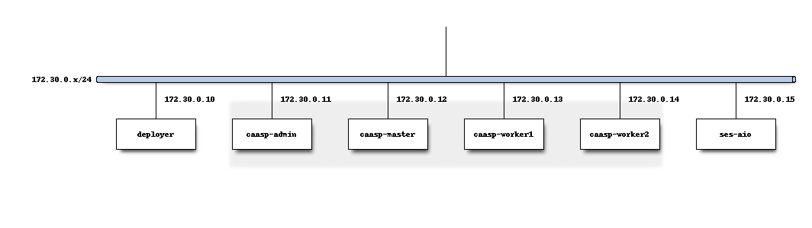

Minimal Network Example¶
This is the minimal network configuration for CCP.

The following configuration files reflect the diagram above.
${WORKDIR}/env/extravars:
socok8s_deployment_goal: airship
socok8s_ext_vip: 172.30.0.245
socok8s_dcm_vip: 172.30.0.246
#either "minimal" or "ha"
scale_profile: minimal
redeploy_osh_only: false
${WORKDIR}/inventory/hosts.yml:
---
caasp-admin:
hosts:
caasp-admin:
ansible_host: 172.30.0.11
vars:
ansible_user: root
caasp-masters:
hosts:
caasp-master:
ansible_host: 172.30.0.12
vars:
ansible_user: root
caasp-workers:
hosts:
caasp-worker1:
ansible_host: 172.30.0.13
caasp-worker2:
ansible_host: 172.30.0.14
vars:
ansible_user: root
soc-deployer:
hosts:
deployer:
ansible_host: 172.30.0.10
vars:
ansible_user: root
ses_nodes:
hosts:
ses-aio:
ansible_host: 172.30.0.15
vars:
ansible_user: root
# added for airship
airship-openstack-control-workers:
hosts:
caasp-worker1:
ansible_host: 172.30.0.13
primary: yes
caasp-worker2:
ansible_host: 172.30.0.14
vars:
ansible_user: root
airship-ucp-workers:
hosts:
caasp-worker1:
ansible_host: 172.30.0.13
primary: yes
caasp-worker2:
ansible_host: 172.30.0.14
vars:
ansible_user: root
airship-kube-system-workers:
hosts:
caasp-worker1:
ansible_host: 172.30.0.13
primary: yes
caasp-worker2:
ansible_host: 172.30.0.14
vars:
ansible_user: root
airship-openstack-compute-workers:
hosts:
primary: yes
caasp-worker2:
ansible_host: 172.30.0.14
vars:
ansible_user: root
${WORKDIR}/ses_config.yml:
---
# Example ses_config.yml file
ceph_conf:
cluster_network: 172.30.0.0/24
fsid: d40fea38-fcf6-3dd5-8479-dd36e8f53ac5
mon_host: 172.30.0.15
mon_initial_members: ses-aio
public_network: 172.30.0.0/24
cinder:
key: AQDkeIZcAAAAABAAdTOl4xyDS0/v9B8m1drZmQ==
rbd_store_pool: volumes
rbd_store_user: cinder
cinder-backup:
key: AQDkeIZcAAAAABAAdTOl4xyDS0/v9B8m1drZmQ==
rbd_store_pool: cinder_backup
rbd_store_user: cinder-backup
glance:
key: AQDkeIZcAAAAABAAdTOl4xyDS0/v9B8m1drZmQ==
rbd_store_pool: images
rbd_store_user: glance
libvirt:
key: AQDkeIZcAAAAABAAdTOl4xyDS0/v9B8m1drZmQ==
rbd_store_pool: vms
rbd_store_user: cinder
nova:
rbd_store_pool: nova
radosgw_urls: []